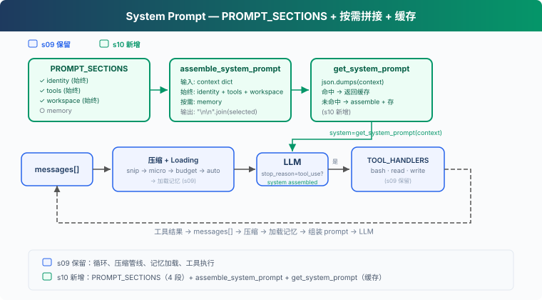

s10: System Prompt — 运行时组装，不硬编码
"prompt 是组装出来的, 不是写死的" — 分段 + 按需拼接 + 缓存。 Harness 层: 提示 — 运行时组装, 不硬编码。
On this page
s01 → ... → s08 → s09 → s10 → s11 → s12 → ... → s20
"prompt 是组装出来的, 不是写死的" — 分段 + 按需拼接 + 缓存。
Harness 层: 提示 — 运行时组装, 不硬编码。
问题
从 s01 到 s09，system prompt 都是一行硬编码：
SYSTEM = f"You are a coding agent at {WORKDIR}. Use tools to solve tasks."
s01 够用，只有 bash、read、write 三个工具。但到 s09，Agent 已经有记忆、有压缩、有技能加载。prompt 该提的能力越来越多：
SYSTEM = (
f"You are a coding agent at {WORKDIR}. "
"Use tools to solve tasks. Act, don't explain. "
"Before starting any multi-step task, use todo_write. "
"Skills are available via list_skills and load_skill. "
"Relevant memories are injected below when available. "
# ... 加一个能力就多一段
)
三个问题：
- 换项目要重写整个 prompt，不知道哪些该改、哪些该留
- 修改一处可能影响全局，加一段工具描述可能跟前面的指令冲突
- 每次请求都带全部内容，即使当前对话用不到某些段落也浪费 token
System prompt 应该是运行时根据当前状态组装的配置：哪些工具启用、哪些上下文可见、哪些记忆相关、哪些内容必须保持稳定以命中 prompt cache。
解决方案

s10 聚焦 prompt 组装机制。以 s08-s09 的能力为背景，但不重复实现压缩和记忆系统。核心变动：把硬编码的 SYSTEM 拆成独立段落（section），运行时根据真实状态按需拼接，缓存结果避免重复组装。
四个 section，两种加载策略：
| Section | 加载策略 | 内容 | 判断依据 |
|---|---|---|---|
| identity | 始终 | 你是谁、怎么做事 | 始终存在 |
| tools | 始终 | 可用工具列表 | enabled_tools |
| workspace | 始终 | 工作目录 | 始终存在 |
| memory | 按需 | 相关记忆内容 | .memory/MEMORY.md 是否存在 |
关键设计：section 是否加载取决于真实状态（工具是否存在、文件是否存在），不是消息里的关键词。
工作原理
PROMPT_SECTIONS: 分段定义
把一大段字符串拆成字典，每个 key 是一个主题：
PROMPT_SECTIONS = {
"identity": "You are a coding agent. Act, don't explain.",
"tools": "Available tools: bash, read_file, write_file.",
"workspace": f"Working directory: {WORKDIR}",
"memory": "Relevant memories are injected below when available.",
}
每个 section 独立维护。修改 tools 不影响 identity，新增 memory 不动 workspace。
assemble_system_prompt: 按需拼接
不是所有 section 每次都需要。当前没有记忆文件，加载 memory section 只是浪费 token。根据 context 的真实状态决定加载哪些：
def assemble_system_prompt(context: dict) -> str:
sections = []
# 始终加载
sections.append(PROMPT_SECTIONS["identity"])
sections.append(PROMPT_SECTIONS["tools"])
sections.append(PROMPT_SECTIONS["workspace"])
# 按需加载 — 基于真实状态，不是关键词
memories = context.get("memories", "")
if memories:
sections.append(f"Relevant memories:\n{memories}")
return "\n\n".join(sections)
"始终加载"的是每轮都需要的：身份、工具、工作目录。"按需加载"的只在特定条件下才有用。
为什么不全加载？token 有成本（system prompt 每轮计费），信息越少 LLM 越专注（无关指令是噪音）。
get_system_prompt: 缓存避免重复拼接
上下文没变时（同一轮对话的多次 LLM 调用，context 相同），重新拼接是浪费。用确定性序列化检测变化，命中缓存直接返回：
def get_system_prompt(context: dict) -> str:
global _last_context_key, _last_prompt
key = json.dumps(context, sort_keys=True, ensure_ascii=False, default=str)
if key == _last_context_key and _last_prompt:
return _last_prompt
_last_context_key = key
_last_prompt = assemble_system_prompt(context)
return _last_prompt
用 json.dumps 而不是 hash()：Python 内置 hash() 有进程随机化，不适合做稳定 cache key，而且遇到 list/dict 会报 unhashable type。
注意：这里的缓存只是"避免重复拼接字符串"，和 CC 的 API prompt cache 不是一回事。CC 的 prompt cache 通过 SYSTEM_PROMPT_DYNAMIC_BOUNDARY 分隔静态和动态部分，静态部分命中 global cache，不因动态内容变化而失效。
context: 真实状态，不是关键词猜测
context 反映当前运行态的真实状态：
def update_context(context: dict, messages: list) -> dict:
memories = ""
if MEMORY_INDEX.exists():
content = MEMORY_INDEX.read_text().strip()
if content:
memories = content
return {
"enabled_tools": list(TOOL_HANDLERS.keys()),
"workspace": str(WORKDIR),
"memories": memories,
}
enabled_tools 列出实际注册的工具。memories 检查 .memory/MEMORY.md 是否存在。section 加载基于这些真实状态，不在消息里搜关键词。
合起来跑
def agent_loop(messages: list, context: dict):
system = get_system_prompt(context)
while True:
response = client.messages.create(
model=MODEL, system=system, messages=messages,
tools=TOOLS, max_tokens=8000)
# ... 工具执行 ...
context = update_context(context, messages)
system = get_system_prompt(context)
每轮循环开头拿一次 system prompt。context 变了就重新组装，没变就返回缓存。
相对 s09 的变更
| 组件 | 之前 (s09) | 之后 (s10) |
|---|---|---|
| prompt | 硬编码 SYSTEM 字符串 | PROMPT_SECTIONS + assemble_system_prompt |
| 缓存 | 无 | get_system_prompt（json.dumps 检测 + 缓存） |
| 新函数 | — | assemble_system_prompt, get_system_prompt, update_context |
| 工具 | bash, read_file, write_file (3) | bash, read_file, write_file (3) — 不变 |
| 循环 | 用固定 SYSTEM | 用 get_system_prompt(context) |
试一下
cd learn-claude-code
python s10_system_prompt/code.py
观察重点：
- 输出中能看到哪些 section 被加载了（
[assembled] sections: ...标签） - 连续对话时，缓存命中显示
[cache hit] - 创建
.memory/MEMORY.md文件后，下一轮 memory section 自动加载
试试这些 prompt：
Read the file README.md（观察始终加载的三个 section）Create a file called .memory/MEMORY.md with content "- [test](test.md) — test memory"（写入记忆索引）Read the file code.py（观察 memory section 是否出现）
接下来
System prompt 可以运行时组装了，但 Agent 碰到错误还是会崩。网络抖动、API 限流、输出被截断、上下文超限，这些不是 bug，是常态。
s11 Error Recovery → 四条恢复路径。升级 token、压缩上下文、指数退避、切换模型。
深入 CC 源码
> 以下基于 CC 源码 `constants/prompts.ts`（914 行）、`constants/systemPromptSections.ts`（68 行）、`context.ts`（189 行）、`utils/api.ts`（718 行）、`utils/systemPrompt.ts`（123 行）、`bootstrap/state.ts` 的分析。 ### CC 的 system prompt 有多少 section？ 数量不固定，受 feature flag、output style、KAIROS/Proactive 模式、用户类型、token 预算等影响。大致分两类： **静态 section**（始终加载）：identity、system、doing_tasks、actions、using_tools、tone_style、output_efficiency 等。 **动态 section**（按状态加载）：session_guidance、memory、ant_model_override、env_info_simple、language、output_style、mcp_instructions、scratchpad、frc、summarize_tool_results、numeric_length_anchors、token_budget、brief 等。 `mcp_instructions` 是唯一的易失性 section（通过 `DANGEROUS_uncachedSystemPromptSection()` 创建），因为 MCP server 可以在轮次间连接和断开。 ### 组装函数getSystemPrompt(tools, model, additionalWorkingDirs?, mcpClients?): Promise<string[]>